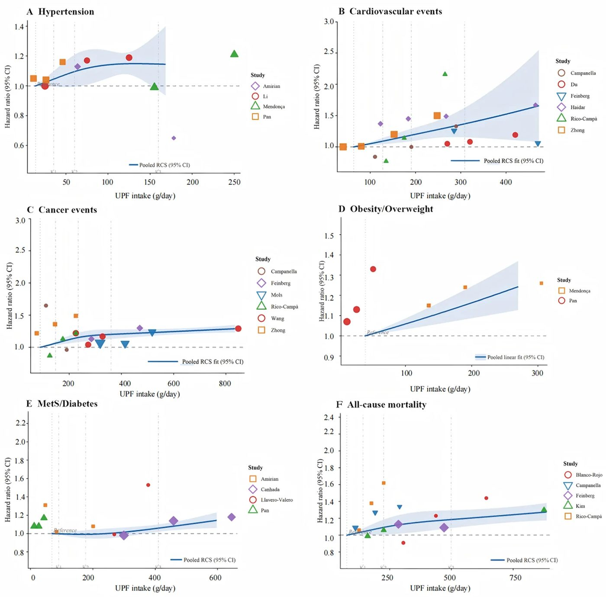

Дайын тағамдар мен тіскебасарлар: 8,8 млн адамға жасалған талдау өңделген өнімдердің салдарын көрсетті


Суреттің толық сипаттамасы
Ультраөңделген тағам өнімдерін тұтыну мен гипертония, жүрек-қан тамырлары аурулары, онкологиялық аурулар, семіздік/артық салмақ, метаболикалық синдром/диабет және барлық себептер бойынша өлім-жітім қаупі арасындағы «әсер-нәтиже» байланысының сызықтық емес талдауы. Гипертония (A), жүрек-қан тамырлары аурулары (B), онкологиялық аурулар (C), семіздік/артық салмақ (D), метаболикалық синдром/диабет (E) және барлық себептер бойынша өлім-жітім (F). HR — қауіп қатынасы.
Әлем бойынша 8 819 894 ересек адамды қамтыған 51 проспективті когорталық зерттеуге метаталдау жүргізілді. Ғалымдар 2 жылдан 32 жылға дейінгі бақылау деректерін сүйене отырып, NOVA жіктемесі бойынша өңделген тағамдар мен созылмалы дерттердің байланысын зерделеді. Терең өңделген тағамдарды көп тұтыну жүрек-қан тамырлары патологиясын 24%-ға, ал асқорыту жүйесі ауруларын 31%-ға арттыратыны белгілі болды. Тәуекел әрбір қосымша порция сайын сызықты түрде өсе түседі.
Басты ойлар
- 8,8 млн адам дерегін талдау ультраөңделген тағамдардың ерте өлім қаупін 18%-ға арттыратынын көрсетті.
- Тәулігіне қосылған әрбір 100 г фабрикалық дайын тағам жүрек дертінің қаупін 14%-ға жоғарылатады.
- Тағам үлесіндегі UPF мөлшерінің 10%-ға артуы қант диабеті мен метаболикалық синдром қаупін 16%-ға өсіреді.
Толығырақ
NOVA жіктемесі тағамдарды өндірістік өңдеу деңгейіне қарай бөледі; ультраөңделген өнімдер (UPF) — құрамында тұз, қант, гидрогенделген майлар және көптеген дәмдеуіш-эмульгаторлар бар тұтынуға дайын өнімдер. Жалпы талдауға жасы 23,9 бен 77 аралығындағы 8 819 894 адамды құрайтын 51 зерттеу енгізілді. Тамақтану дағдысы жиілік сауалнамалары (FFQ) мен тәуліктік есте сақтау (24-hour recalls) әдістері арқылы анықталып, көрсеткіштер қатерлер қатынасымен (Hazard Ratio, HR) стандартталды.
UPF-ті ең көп тұтынған топта қатер деңгейі айтарлықтай жоғары болды: жүрек-қан тамырлары оқиғалары (инфаркт, инсульт) 24%-ға (HR 1,24; 95% СИ 1,14–1,36), метаболикалық синдром мен қант диабеті 24%-ға (HR 1,24; 95% СИ 1,08–1,42), қатерлі ісіктер 12%-ға (HR 1,12; 95% СИ 1,04–1,21), ал жалпы өлім-жітім 18%-ға (HR 1,18; 95% СИ 1,10–1,26) артатыны байқалды. «Мөлшер — әсер» есебі тәулігіне қосылған әрбір 100 грамм UPF гипертония қаупін 11%-ға (HR 1,11; 95% СИ 1,02–1,21), жүрек-қан тамырлары дертін 14%-ға (HR 1,14; 95% СИ 1,06–1,22) жоғарылататынын дәлелдеді.
Шектеулер
Когорталық бақылау себеп-салдарды тікелей дәлелдей алмайды және адамдардың өз рационын еске түсіруіне сүйенеді. GRADE шкаласы бойынша дәлелдік деңгейі төмен немесе орташа деп бағаланды.
Мақаланың толық аудармасы
Түйіндеме
Ультраөңделген тағам өнімдерін (УӨТ) жаһандық тұтыну соңғы жылдары қарқынды өсуде. Жинақталған деректер УӨТ-ті жоғары деңгейде тұтынуды гипертония, жүрек-қан тамыр аурулары, қатерлі ісік және метаболикалық бұзылулар сияқты күрделі созылмалы аурулардың даму қаупінің артуымен байланыстырады. Бұл жағдайлар алғашқы медициналық-санитарлық көмек көрсету жағдайында жиі мультиморбидтілік (бір мезгілде бірнеше аурудың болуы) ретінде бірге кездеседі, бұл клиникалық күрделілікті, медициналық көмекке деген қажеттілікті және ұзақ мерзімді емдеу жүктемесін арттырады.
Біз УӨТ-ті жоғары деңгейде тұтыну созылмалы аурулардың көптеген түрлерінің даму қаупінің артуымен байланысты екенін анықтадық, оның ішінде: жүрек-қан тамыр оқиғалары (24%), семіздік/артық салмақ (23%), метаболикалық синдром (МС)/диабет (24%), депрессия/мазасыздық (27%), ас қорыту жүйесінің аурулары (31%), қатерлі ісік (12%) және барлық себептер бойынша өлім-жітім (18%). «Доза-әсер» талдауы көрсеткендей, УӨТ-ті тұтынудың әрбір қосымша 100 г/күн мөлшері гипертония қаупін 11%-ға, жүрек-қан тамыр оқиғалары қаупін 14%-ға, қатерлі ісік қаупін 4%-ға және барлық себептер бойынша өлім-жітім қаупін 3%-ға арттырады; рациондағы салмақ/энергия үлесінің әрбір 10%-ға артуы МС/диабет қаупін 16%-ға арттырады.
Маңызды
УӨТ-ті жоғары деңгейде тұтыну патологияға байланысты созылмалы аурулар қаупінің 12–31%-ға өсуімен байланысты, ал УӨТ-тің әрбір 100 г/күн мөлшері барлық себептер бойынша өлім-жітім қаупін 3%-ға арттырады.
Болашақ зерттеулер УӨТ-ті тұтынуды жіктеу мен мөлшерін анықтаудың стандартталған және дәл әдістерін әзірлеуі, салыстырмалы өлшем бірліктерін қолдана отырып «доза-әсер» нәтижелері туралы есеп беруі, қауіп бағалаулары халыққа, тамақтану сипатына және аурудың бастапқы қаупіне байланысты өзгеретінін зерттеуі, сондай-ақ дәлелдерге негізделген тамақтану бойынша ұсыныстарды қалыптастыруы керек. Алғашқы медициналық-санитарлық көмек көрсету жағдайында медицина қызметкерлері УӨТ-ті тұтынуды азайту бойынша кеңестерді өмір салты бойынша әдеттегі кеңестерге және мультиморбидтілікті басқаруға енгізе алады, пациенттердің тамақтану артықшылықтары мен олардың метаболикалық профиліне бейімделген практикалық ұсыныстар бере алады.
УӨТ-ті тұтыну айтарлықтай өсті және күнделікті рационның үлкен бөлігін құрайды. Өнеркәсіптік өңдеу дәрежесіне қарай азық-түлік өнімдерін жіктейтін кеңінен қолданылатын NOVA жіктемесіне сәйкес, УӨТ — бұл тұтынуға немесе қыздыруға дайын, терең өнеркәсіптік өңдеуден өткен және жиі көптеген тағамдық қоспаларды қамтитын өнімдер. Олар әдетте жоғары энергия тығыздығына ие, құрамында қант пен тұз көп, бірақ тағамдық талшықтарға, ақуызға, дәрумендер мен минералдарға бай емес, бұл олардың ыңғайлылығын, дәмін және ұзақ сақталу мерзімін қамтамасыз етеді.
УӨТ-ті тұтыну соңғы онжылдықтарда бүкіл әлемде артып келеді. АҚШ-тағы ересектер арасында УӨТ 2001 жылы жалпы энергия тұтынудың 53,5%-ын құраған, 2018 жылы 57,0%-ға дейін көтерілген және 2021–2023 жылдары 53,0% деңгейінде қалған. Басқа елдерде де осындай өсу байқалған: үш онжылдық ішінде УӨТ-ті тұтыну Испанияда 11,0%-дан 31,7%-ға дейін, Мексика мен Бразилияда 10%-дан 23%-ға дейін және Қытайда 3,5%-дан 10,4%-ға дейін өскен.
Абайлаңыз
Зерттеу бақылау когорталық деректерге негізделген: тікелей себеп-салдарлық байланыс емес, статистикалық байланыс орнатылған. Бақыланатын әсерлер өмір салтының аралас факторларымен күрделенуі мүмкін.
Пайда болып жатқан дәлелдер УӨТ-ті шамадан тыс тұтыну адам денсаулығына кері әсер етуі мүмкін екенін көрсетеді. Мысалы, 60 298 адам қатысқан UK Biobank болашақ зерттеуі УӨТ-ті жоғары деңгейде тұтыну 10,9 жыл ішінде жүрек-қан тамыр аурулары (ЖҚТА) және барлық себептер бойынша өлім-жітім қаупінің артуымен байланысты екенін көрсетті. УӨТ-ті тұтынумен байланысты көптеген денсаулық жағдайлары — гипертония, семіздік, диабет, ЖҚТА, қатерлі ісік және депрессия — жиі бір адамдарда бірге кездеседі және алғашқы медициналық көмекте көрінетін типтік мультиморбидтілік үлгілерін қалыптастырады. Мультиморбидтілік денсаулық сақтау жүктемесін айтарлықтай арттырады, өмір сүру сапасын төмендетеді және ұзақ мерзімді емдеуді қиындатады. Тікелей медициналық шығындар диабетпен қатар жүретін гипертония үшін жылына шамамен 14 300 I және диагноз қойылғаннан кейінгі бірінші жылы психикалық аурулармен қатар жүретін қатерлі ісік үшін 85 820 I-ға дейін бағаланады. Сондықтан, УӨТ сияқты диеталық әсерлерді қамтитын созылмалы аурулардың жалпы қауіп факторларын түсіну алғашқы медициналық-санитарлық көмекте профилактикалық стратегияларды қалыптастыру үшін қажет.
Бұл зерттеу Жүйелі шолулардың халықаралық болашақ тізілімінде (PROSPERO; тіркеу нөмірі: CRD42023421092) тіркелген және PRISMA мәлімдемесіне сәйкес орындалған (онлайн қосымша кесте S1). Біз PubMed, Embase және Cochrane Library деректер базаларында олардың құрылған сәтінен бастап 2026 жылғы 28 сәуірге дейінгі кезең үшін әдебиеттерді жан-жақты іздедік. Іздеу стратегиясы MeSH терминдерін де, еркін мәтіндегі кілт сөздерді де қамтыды, оның ішінде «ультраөңделген тағам», «жүрек-қан тамыр аурулары», «гипертония», «диабет», «депрессия», «мазасыздық», «өлім-жітім», «семіздік» және «ас қорыту жүйесінің аурулары».
Түсіндірме
PRISMA әдісі — бұл жүйелі шолулар үшін есеп беру стандарты, зерттеулерді таңдауда ашықтықты қамтамасыз етеді және деректерді талдауда бейтараптықты барынша азайтады.
Зерттеулер PECOS (Халық, Әсер, Салыстыру, Нәтиже және Зерттеу дизайны) критерийлеріне сәйкес таңдап алынды: (1) Қатысушылар: бастапқы кезеңде нақты клиникалық жағдайлар бойынша шектеусіз ересектер (≥18 жас); (2) Әсер және компаратор: УӨТ-ті тұтынудың ең жоғары және ең төмен санаттары арасындағы салыстыру. УӨТ NOVA жіктемесіне сәйкес анықталған; (3) Нәтижелер: гипертония, жүрек-қан тамыр оқиғалары, қатерлі ісік, МС/диабет, ас қорыту жүйесінің аурулары және барлық себептер бойынша өлім-жітім сияқты барлық денсаулық нәтижелері, артериосклероз және гиперлипидемия сияқты субклиникалық ауруларды қоспағанда; (4) Зерттеу дизайны: болашақ когорталық зерттеулер. Төмендегі критерийлерге сәйкес келетін зерттеулер алынып тасталды: (1) Хаттамалар, шолулар, жануарларға жүргізілген зерттеулер, «жағдай-бақылау», ретроспективті когорталық және көлденең зерттеулер; (2) УӨТ үшін нақты анықтамасы жоқ (NOVA жіктемесіне сәйкес) немесе тек УӨТ-тің ішкі санаттарын қамтитын зерттеулер; (3) Деректері қолжетімсіз зерттеулер; (4) Тек арнайы клиникалық немесе жоғары қауіп топтарында (мысалы, жүкті әйелдер, ауыр науқастар немесе бауыр, бүйрек немесе қатерлі ісік аурулары бар тұлғалар) жүргізілген зерттеулер.
Төмендегі деректер үш автор (XL, S-WL және Y-TZ) тарапынан тәуелсіз түрде бөліп алынды: (1) бірінші автор, жыл, ел/аймақ; (2) зерттеу дизайны және бақылау кезеңі; (3) халық сипаттамалары; (4) УӨТ-ті тұтынуды бағалау және санаттары; (5) нәтижелер; (6) ең толық модельдерден 95% CI бар OR (мүмкіндіктер қатынасы) немесе RR (салыстырмалы қауіп) немесе HR (қауіп қатынасы). Бейтараптықтың әлеуетті қауіптері ROBINS-E құралының көмегімен бағаланды.
Санаттық талдау үшін УӨТ-ті тұтыну деңгейлері (ең жоғары және ең төмен) DerSimonian-Laird модельдерімен OR/RR/HR және 95% CI көмегімен біріктірілді. «Доза-әсер» байланыстары қателерді сенімді бағалаумен бір сатылы метарегрессия көмегімен бағаланды. Сызықтық бағалаулар жалпы күндік салмақ/энергия тұтынудың әрбір 10%-ына, әрбір 100 г/күн-ге және әрбір 10 порция/апта-ға қатысты хабарланды. Гетерогенділік tau² және Cochran Q-тесті (p<0,10) көмегімен бағаланды. I² статистикасы зерттеулер арасындағы сәйкессіздікті сипаттау үшін қолданылды. Талдау Review Manager (RevMan) 5.4 нұсқасы және R 4.6.0 нұсқасы көмегімен жүзеге асырылды. p<0,05 статистикалық тұрғыдан маңызды деп есептелді.
Деректер базасын іздеу процесі онлайн қосымша сурет S1-де жинақталған. Барлығы 10 699 мақала анықталды. 1420 дубликат өшірілгеннен кейін 9279 мақала қалды. Атаулар мен аннотацияларды қарап шыққаннан кейін 9120 мақала алынып тасталды. Қалған 159 мақаланың толық мәтіндері критерийлерге сәйкестігі бағаланды, бұл 108 мақаланың алынып тасталуына әкелді. Соңында 51 зерттеу енгізілді.
51 болашақ когорталық зерттеуге 8 819 894 адам қатысты. Бақылау кезеңі 2 жылдан 32 жылға дейін, қатысушылардың орташа жасы 23,9 жастан 77 жасқа дейін болды. Таңдау көлемі 896-дан 5 468 444 адамға дейін болды, 46,4% қатысушы ер адамдар. Географиялық тұрғыдан 16 зерттеу Америкада, 25-і Еуропада, сегізі Азияда және екеуі Океанияда жүргізілді. Барлық зерттеулер төмен бейтараптық қаупіне ие болды, біреуінен басқа (орташа қауіп, онлайн қосымша кесте S5).
Сегіз когорта (118 946 қатысушы) УӨТ-ті тұтыну гипертония қаупінің жоғары болуымен айтарлықтай байланысты емес екенін көрсетті (ең жоғары және ең төмен HR 1,09, 95% CI 0,99–1,20). Алайда, «доза-әсер» талдауында әрбір қосымша 100 г/күн гипертония қаупімен оң сызықтық байланысты болды (HR 1,11, 95% CI 1,02–1,21; p=0,041; Сурет 1 A). Он екі когорта (441 175 қатысушы) УӨТ-ті тұтыну жүрек-қан тамыр оқиғаларымен айтарлықтай байланысты екенін көрсетті (ең жоғары және ең төмен HR 1,24, 95% CI 1,14–1,36). «Доза-әсер» талдауында үш әсер көрсеткіші бойынша оң сызықтық байланыстар байқалды: әрбір 100 г/күн (HR 1,14, 95% CI 1,06–1,22; p=0,002; Сурет 1 B), салмақ/энергия үлесінің әрбір 10%-ға артуы (HR 1,03, 95% CI 1,02–1,04; p<0,001) және әрбір 10 порция/апта (HR 1,10, 95% CI 1,04–1,16; p=0,003).
Суреттің толық сипаттамасы
Ультраөңделген тағам өнімдерін тұтыну мен гипертония, жүрек-қан тамырлары аурулары, онкологиялық аурулар, семіздік/артық салмақ, метаболикалық синдром/диабет және барлық себептер бойынша өлім-жітім қаупі арасындағы «әсер-нәтиже» байланысының сызықтық емес талдауы. Гипертония (A), жүрек-қан тамырлары аурулары (B), онкологиялық аурулар (C), семіздік/артық салмақ (D), метаболикалық синдром/диабет (E) және барлық себептер бойынша өлім-жітім (F). HR — қауіп қатынасы.
Он бір когорта (1 246 153 қатысушы) УӨТ-ті тұтыну қатерлі ісік аурулары қаупінің жоғары болуымен айтарлықтай байланысты екенін көрсетті (ең жоғары және ең төмен HR 1,12, 95% CI 1,04–1,21). «Доза-әсер» талдауында үш көрсеткіш бойынша оң байланыстар байқалды: әрбір 100 г/күн (HR 1,04, 95% CI 1,02–1,06; p=0,002; Сурет 1 C), салмақ/энергия үлесінің әрбір 10%-ға артуы (HR 1,01, 95% CI 1,01–1,01; p<0,001) және әрбір 10 порция/апта (HR 1,02, 95% CI 1,01–1,03; p<0,001).
Төрт когорта (135 685 қатысушы) УӨТ-ті тұтыну семіздік/артық салмақпен айтарлықтай байланысты екенін көрсетті (ең жоғары және ең төмен HR 1,23, 95% CI 1,17–1,30). Сегіз когорта (333 242 қатысушы) УӨТ-ті тұтыну МС/диабет қаупінің жоғары болуымен айтарлықтай байланысты екенін көрсетті (ең жоғары және ең төмен HR 1,24, 95% CI 1,08–1,42). «Доза-әсер» талдауында әрбір қосымша 100 г/күн қауіппен оң байланысты болды (HR 1,02, 95% CI 1,01–1,04; p=0,009; Сурет 1 E). Салмақ/энергия үлесінің әрбір 10%-ға артуы МС/диабет қаупімен оң сызықтық байланысты болды (HR 1,16, 95% CI 1,09–1,23; p=0,004).
Төрт когорта (228 597 қатысушы) УӨТ-ті тұтыну депрессия/мазасыздықпен айтарлықтай байланысты екенін көрсетті (ең жоғары және ең төмен HR 1,27, 95% CI 1,15–1,40). Алты когорта (6 073 960 қатысушы) ас қорыту жүйесінің ауруларымен айтарлықтай байланысты екенін көрсетті (ең жоғары және ең төмен HR 1,31, 95% CI 1,16–1,48). Тоғыз когорта (400 000 қатысушы) барлық себептер бойынша өлім-жітіммен айтарлықтай байланысты екенін көрсетті (ең жоғары және ең төмен HR 1,18, 95% CI 1,10–1,26).
51 болашақ когорта (8 819 894 қатысушы) қатысқан мета-талдауымыз УӨТ-ті жоғары деңгейде тұтыну созылмалы аурулардың көптеген түрлері мен барлық себептер бойынша өлім-жітім қаупінің артуымен байланысты екенін көрсетті. Бұл жағдайлар жиі мультиморбидтілік кластерлерін қалыптастыратындықтан, УӨТ-ті тұтыну жалпы қауіп факторы болуы мүмкін. Рациондағы УӨТ үлесін азайту халық деңгейінде мультиморбидтілік жүктемесін жеңілдетудің практикалық стратегиясы болуы мүмкін.
Абайлаңыз
GRADE бойынша дәлелдер сапасы көптеген нәтижелер (жүрек-қан тамыр оқиғалары, қатерлі ісік, МС/диабет, депрессия, ас қорыту жүйесінің аурулары, өлім-жітім) үшін төмен және гипертония үшін өте төмен деп бағаланды, бұл нәтижелерді сақтықпен түсіндіру керектігін көрсетеді.
УӨТ төмен тағамдық құндылыққа және жоғары энергия тығыздығына ие, бұл тамақтану қарқынын арттырып, тоқтық сигналдарын кешіктіруі мүмкін, бұл артық тамақтануға әкеледі. Тағамдық қоспалардың комбинациясы «коктейль эффектісін» тудыруы мүмкін. Сонымен қатар, өңдеу процесінде акриламид (Maillard реакциясы нәтижесінде) және акролеин сияқты зиянды қосылыстар түзілуі, сондай-ақ қаптамадан химиялық заттар (мысалы, бисфенол А немесе S) өтуі мүмкін, олар ЖҚТА қаупімен байланысты.
Дәлелдер УӨТ-ті жоғары деңгейде тұтыну созылмалы аурулардың көптеген түрлері қаупінің артуымен байланысты екенін көрсетеді. Бұл байланыстар әсерді сандық бағалау әдісіне байланысты өзгеруі мүмкін. УӨТ-пен байланысты созылмалы аурулар жиі мультиморбидтілік ретінде кластерленетінін ескерсек, УӨТ-ті тұтынуды азайту және оларды минималды өңделген баламалармен алмастыру аурулардың алдын алу және алғашқы медициналық-санитарлық көмекте оларды басқару үшін өзекті болуы мүмкін.
Зерттеу сызбасы
Мақала рецензияланатын Family medicine and community health журналында жарияланған. Бірақ бұл да бір зерттеу ғана, түпкілікті қорытынды емес.
Дереккөз
| Дереккөз | Санат | Лицензия |
|---|---|---|
| Family medicine and community health (Europe PMC) | shelf_life | CC BY-NC 4.0 |
Дереккөздер
| Дереккөз | Сілтеме |
|---|---|
| Страница статьи | europepmc.org |
| Полный текст (PDF) | europepmc.org |
| DOI | doi.org |
| Метаданные Crossref | api.crossref.org |
| Europe PMC | europepmc.org |
| Иллюстрация | commons.wikimedia.org |